Dichiarazione di porto base
Il portale delle Smart Guide è uno spazio digitale che raccoglie risorse pratiche e aggiornate in un unico ambiente intuitivo. Strumenti chiari e organizzati per organizzarti e trovare subito ciò che ti serve.

ACCENNI NORMATIVI
La dichiarazione di porto base è un atto con cui l’armatore indica formalmente all’Autorità marittima il porto in cui una nave è stabilmente basata.
Con il Decreto Ministeriale 27 aprile 2017, alcune tipologie di navi possono usufruire di un regime semplificato chiamato “abbonamento”, che consente di non dover effettuare le formalità di arrivo e partenza a ogni scalo, ma solo con periodicità stabilita (settimanale, mensile o annuale), presentando presso la Capitaneria del porto base individuato.
01.
Creazione e Sottomissione
Panoramica sulla creazione e gestione della Dichiarazione di Porto Base, dall’inserimento dei dati alla sottomissione.
Creazione Dichiarazione di Porto Base

Dopo aver effettuato l’accesso alla pagina “Dichiarazione Porto Base”, cliccare sul pulsante “Nuova dichiarazione” per avviare il flusso di creazione.
Per avviare la ricerca della nave, selezionare una delle seguenti tipologie di Dichiarazione di Porto Base
Nuova Dichiarazione di Porto Base
Consente di creare una nuova dichiarazione attraverso una procedura guidata a step, senza l’obbligo di allegare un documento a supporto.

Dichiarazione in corso di validità e approvata extra-sistema
Consente di creare una nuova dichiarazione attraverso una procedura guidata a step, ma essendo una dichiarazione approvata extra sistema è obbligatorio allegare un documento.

01. Nuova dichiarazione di porto base
Step di creazione di una Dichiarazione di Porto Base
Per creare una nuova dichiarazione di Porto Base, l’Armatore dovrà procedere seguendo i passaggi sottostanti.
RICERCA E SELEZIONE NAVE
Consente di ricercare e selezionare la nave di interesse.
AGGIUNTA DOCUMENTO E IMPOSTA DI BOLLO
Consente di aggiungere i documenti e inserire le informazioni dell’imposta di bollo.
UTENTI DICHIARANTI (facoltativo)
Consente di indicare gli utenti da delegare per la gestione degli abbonamenti.
RIEPILOGO DICHIARAZIONE
Consente di visualizzare il riepilogo delle informazioni inserite negli step precedenti e procedere con il Salvataggio in bozza o la Sottomissione della Dichiarazione.
RICERCA E SELEZIONE NAVE
RICERCA DELLA NAVE
Ricercare la nave tramite uno dei criteri disponibili; in questo esempio inserire “Ezreal” nel campo “Compagnia” e selezionare il pulsante “Cerca”.


RISULTATI DELLA RICERCA
Il sistema mostra i risultati della ricerca, includendo in questo caso tutte le navi censite associate alla compagnia Ezreal.
SELEZIONE E ASSOCIAZIONE PORTO
Dopo aver selezionato la nave, inserire le informazioni presenti nella sezione “Associazione porto”; cliccare su “Vai avanti” per proseguire.

AGGIUNTA DOCUMENTO
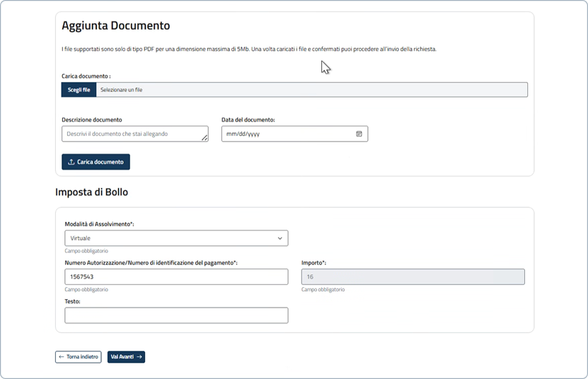
Aggiunta Documento
L’inserimento del documento è previsto in entrambe le tipologie di dichiarazione; tuttavia, trattandosi di una nuova dichiarazione, questo passaggio è facoltativo.
Imposta di Bollo
L’imposta di bollo viene assolta selezionando la modalità di assolvimento e la successiva compilazione dei campi contestuali alla modalità pre scelta. Per proseguire è necessario compilare la sezione successivamente cliccare il pulsante “Vai Avanti”.
UTENTI DICHIARANTI
RICERCA DELL’UTENTE
Per aggiungere uno o più utenti è necessario valorizzare il campo “Identificativo fiscale”. Cliccando il pulsante “Cerca” l’utente verrà aggiunto nella tabella “Utenti dichiaranti aggiunti”.
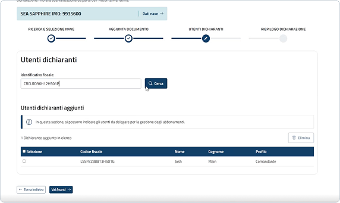
POSSIBILITÀ DI SELEZIONE ED ELIMINAZIONE
È possibile eliminare uno o più utenti presenti nella tabella, selezionandoli tramite le relative checkbox e successivo clic del pulsante “Elimina”.
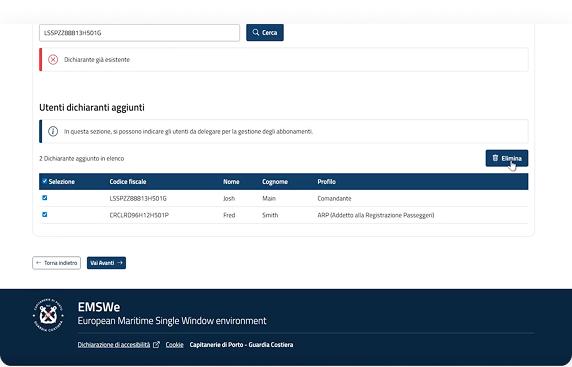
VERIFICA E STEP SUCCESSIVO
Verificato il corretto inserimento degli utenti, selezionare il pulsante “Vai avanti” per procedere.
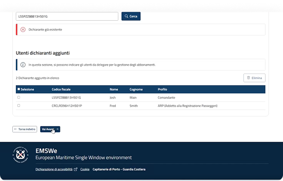
RIEPILOGO DICHIARAZIONE
INFORMAZIONI E POSSIBILI AZIONI
Nell’ultimo passaggio di riepilogo è possibile consultare tutte le informazioni inserite, sottomettere o salvare in bozza la Dichiarazione.
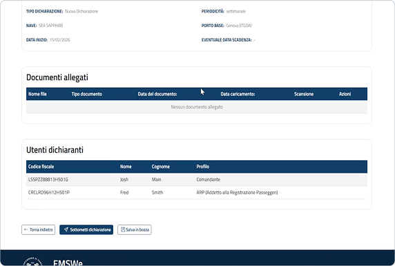
SALVATAGGIO IN BOZZA DELLA DICHIARAZIONE
È possibile salvare la Dichiarazione in bozza; dopo aver confermato l’operazione tramite una finestra che apparirà sullo schermo, la Dichiarazione assumerà lo stato “Bozza” ma non sarà ancora visibile agli operatori CdP.
SOTTOMISSIONE DELLA DICHIARAZIONE
È possibile sottomettere la Dichiarazione; dopo aver confermato l’operazione tramite una finestra che apparirà sullo schermo, la Dichiarazione assumerà lo stato “Sottomessa” e sarà inviata per valutazione all’operatore CdP.
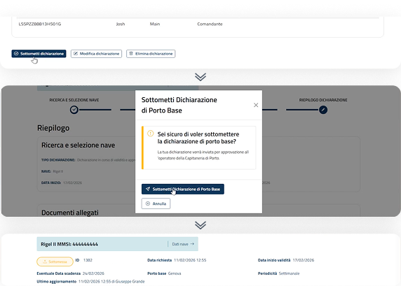
02. Dichiarazione in corso di validità e approvata extra-sistema
Step di creazione — Dichiarazione in corso di validità e approvata extra-sistema
Per creare una dichiarazione in corso di validità e approvata extra-sistema, l'Armatore dovrà procedere seguendo i passaggi sottostanti.
RICERCA E SELEZIONE NAVE
AGGIUNTA DOCUMENTO
UTENTI DICHIARANTI (facoltativo)
RIEPILOGO DICHIARAZIONE
Gli step "Ricerca e selezione nave", "Aggiunta utenti dichiaranti", sono le medesime descritte nel flusso "Nuova Dichiarazione di Porto Base"
RICERCA E SELEZIONE NAVE
RICERCA DELLA NAVE
Ricercare la nave tramite uno dei criteri disponibili; in questo esempio, inserire "Ezreal" nel campo "Compagnia" e selezionare il pulsante "Cerca".
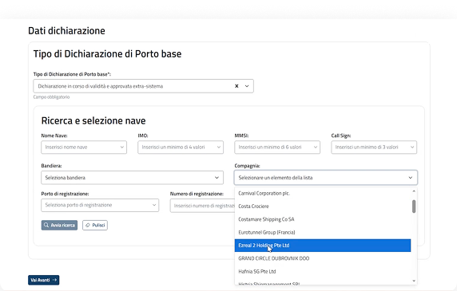
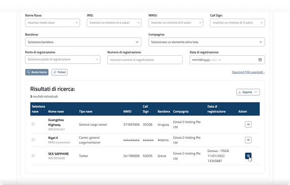
RISULTATI DELLA RICERCA
Il sistema mostra i risultati della ricerca, includendo in questo caso tutte le navi censite associate alla compagnia Ezreal.
SELEZIONE E ASSOCIAZIONE PORTO
Dopo aver selezionato la nave, inserire le informazioni presenti nella sezione "Associazione porto"; cliccare su "Vai avanti" per proseguire.
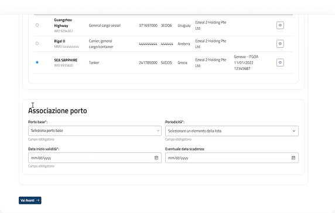
Dichiarazione in corso di validità e approvata extra-sistema
AGGIUNTA DEL DOCUMENTO
In questo caso l'inserimento del documento sarà obbligatorio
AGGIUNTA DEL DOCUMENTO
Selezionare il file che si intende allegare, aggiungere le informazioni (descrizione e data del documento) e cliccare il pulsante "Carica documento". Per proseguire cliccare il pulsante "Vai Avanti".
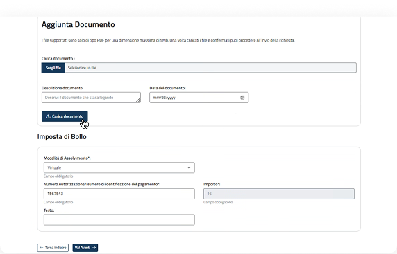
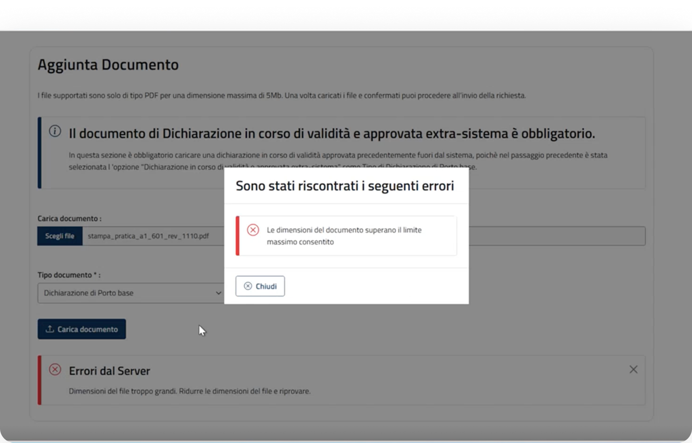
POSSIBILE ERRORE PER DIMENSIONE E FORMATO DEL FILE
Il file da caricare deve rispettare le dimensioni e i formati consentiti; in caso contrario, il sistema non ne consentirà l'inserimento e mostrerà una finestra di errore.
REVISIONE E CONFERMA
Dopo aver caricato il documento corretto e inserito le informazioni richieste, clicca su "Vai avanti" per procedere allo step successivo.
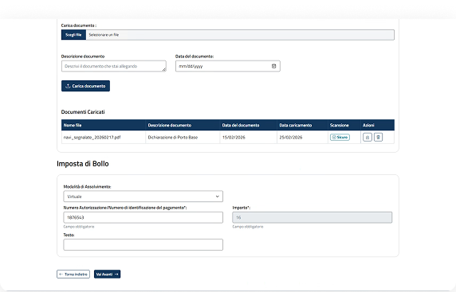
Creazione nuova Dichiarazione di Porto Base – Dichiarazione in corso di validità e approvata extra-sistema
Azioni successive al "Salvataggio in Bozza" e alla "Sottomissione"
Di seguito sono mostrate le azioni disponibili a seguito di salvataggio in bozza o sottomissione della Dichiarazione di Porto Base.
AZIONI POSSIBILI DOPO IL SALVATAGGIO IN BOZZA
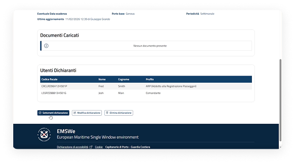
AZIONI POSSIBILI DOPO LA SOTTOMISSIONE
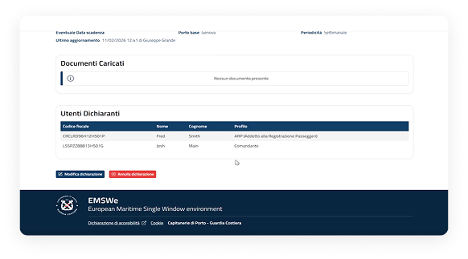
Creazione nuova Dichiarazione di Porto Base – Dichiarazione in corso di validità e approvata extra-sistema
Finestre informative dopo Salva in Bozza e Sottomissione
Di seguito sono mostrate le azioni disponibili a seguito di salvataggio in bozza o sottomissione della Dichiarazione di Porto Base.
DICHIARAZIONI ESISTENTI CON STESSA NAVE E PORTO
Nel caso in cui esista già una Dichiarazione di Porto Base per la stessa nave e porto, il sistema mostrerà un messaggio di attenzione che informa l'utente che, procedendo con la conferma, la dichiarazione di porto base precedente verrà posta nello stato "Chiusa" il giorno prima rispetto alla nuova data di inizio validità.
DICHIARAZIONI ESISTENTI CON STESSA NAVE E PORTO DIFFERENTE
Nel caso in cui esista già una Dichiarazione di Porto Base per la stessa nave e porto diverso, il sistema mostrerà un messaggio informando l'utente che prima di procedere con il salvataggio o la sottomissione, è necessario invalidare le dichiarazioni sovrapposte per poter proseguire con la creazione. La finestra mostra le dichiarazioni presenti e il relativo per poter accedere al dettaglio.
Ricerca delle navi
ULTERIORI MODALITÀ DI RICERCA
NAVE NON CENSITA
È possibile censire una nuova nave cliccando sul pulsante "Censisci nuova nave", disponibile sia all'interno della finestra visualizzata, se la ricerca non restituisce risultati sia sotto la tabella dei risultati.
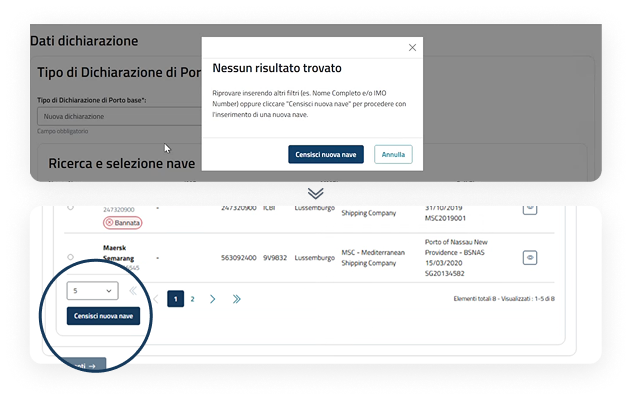
NAVE BANNATA
Nel caso in cui si selezioni una nave bannata, il sistema ne dà evidenza tramite una finestra di attenzione richiedendo l'inserimento obbligatorio di una motivazione per poter proseguire.
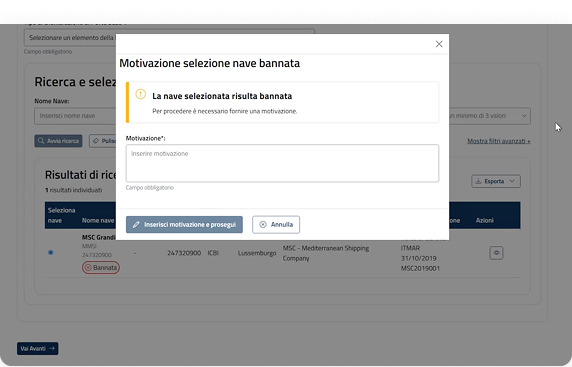
NAVE DI UN'ALTRA COMPAGNIA DI NAVIGAZIONE
Nel caso in cui si selezioni una nave appartenente a una compagnia differente rispetto a quella dell'armatore, il sistema ne dà evidenza tramite una finestra di attenzione. Si può procedere con la creazione tramite il pulsante "Conferma e procedi".
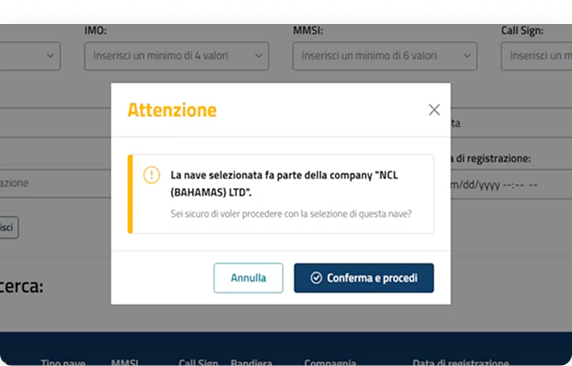
02.
Modifica Dichiarazione di porto base
Panoramica sulla modifica della Dichiarazione di Porto Base, dalla sostituzione dei dati alla sottomissione.
Punto di Accesso della modifica di una Dichiarazione di Porto Base
Attivazione "Modifica" dall'elenco risultati di ricerca
Nell'elenco risultati della Dichiarazione di porto base è possibile accedere al dettaglio in modalità modifica cliccando sull'"icona della matita".
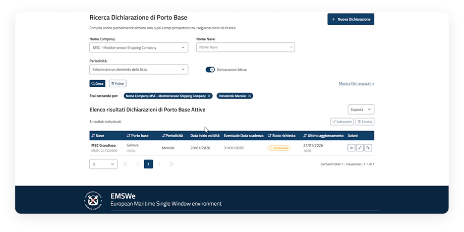
Attivazione Modifica da pagina di dettaglio Dichiarazione Porto Base
Nell'elenco risultati della Dichiarazione di porto base è possibile accedere al dettaglio in modalità visualizzazione cliccando sull'"icona dell'occhio". All'interno del dettaglio per procedere con la modifica sarà necessario cliccare sul pulsante "Modifica Dichiarazione".
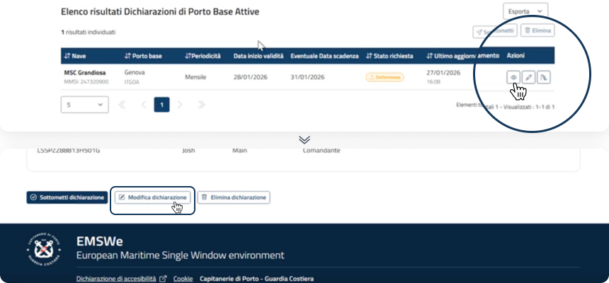
All'interno della pagina di dettaglio in modalità Modifica, il processo di aggiornamento delle informazioni seguirà lo stesso flusso guidato a step, descritto nel flusso di "Creazione e sottomissione"
Le informazioni non modificabili sono il tipo di Dichiarazione Porto Base e l'associazione di una nuova nave.
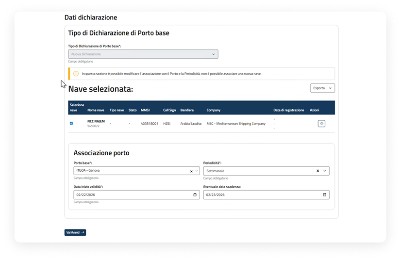
In questa sezione è possibile modificare l'associazione con il Porto e la Periodicità, non è possibile associare una nuova nave.
Dopo aver effettuato le modifiche è possibile o salvare nuovamente la Dichiarazione in bozza cliccando sul pulsante "Salva in bozza" o sottometterla cliccando sul pulsante "Sottometti"
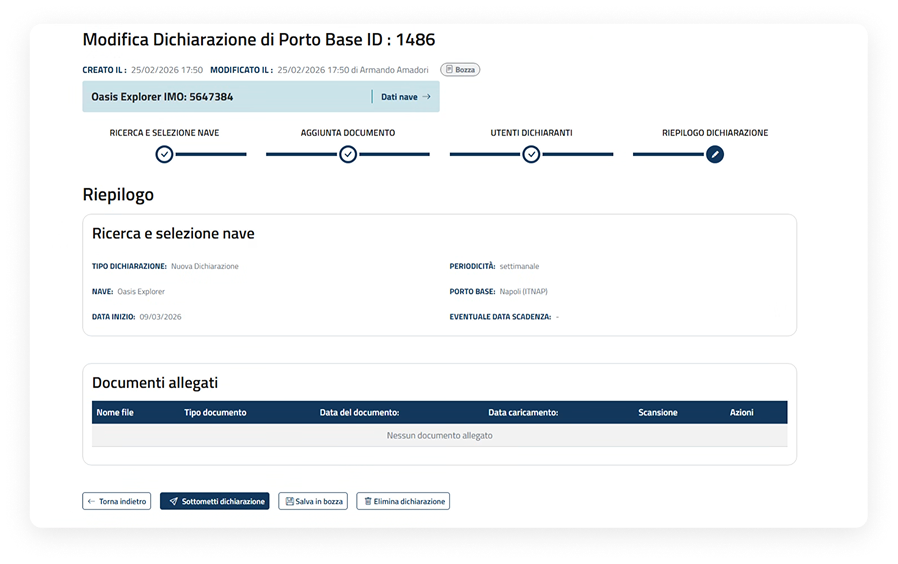
La modifica delle Dichiarazioni di Porto Base in stato "Sottomessa" è consentita solo nel caso in cui la Dichiarazione non sia associata a un Fascicolo che contenga soste con Obblighi di Dichiarazione inviati a CdP.
Dopo aver effettuato le modifiche è possibile sottomettere la variazione della Dichiarazione cliccando sul pulsante "Sottometti variazione".
Nel caso in cui l'Armatore modifichi il Porto Base, il sistema al momento della sottomissione variazione, crea e sottomette una nuova Dichiarazione di Porto Base e la inoltra all'Operatore CdP responsabile del nuovo porto inserito e contestualmente pone la Dichiarazione di Porto Base modificata in stato "Ritirata".
Nel caso in cui la Dichiarazione di Porto Base "Ritirata" risulti essere associata a un fascicolo che contenga soste con Obblighi di Dichiarazione inviati a CdP, quest'ultimo e i relativi oggetti associati, vengono posti nello stato "Eliminato";
Nel caso in cui l'Armatore non modifichi il Porto Base, la Dichiarazione di Porto Base precedentemente inviata a CdP viene integrata con le nuove informazioni inserite.
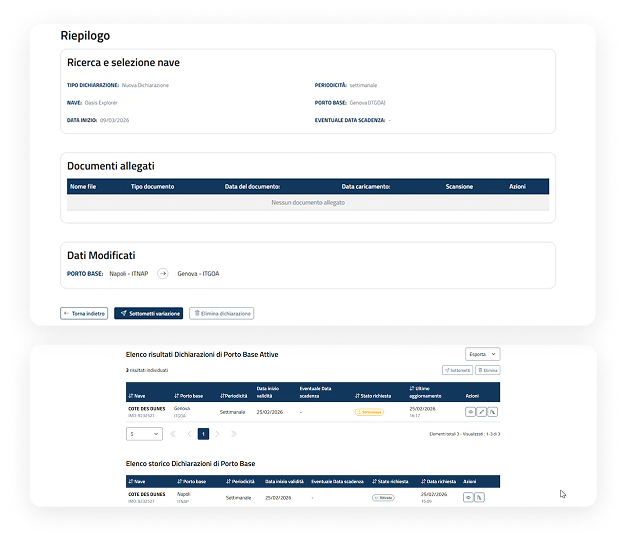
03.
Cancellazione
Panoramica sul flusso di cancellazione delle Dichiarazioni di Porto Base.
Passaggi per cancellare la Dichiarazione
Dopo aver salvato in bozza una Dichiarazione di Porto Base, l'utente Armatore può eliminarla seguendo i seguenti passaggi:
Dopo l'eliminazione la Dichiarazione non sarà più visibile all'utente.
ELIMINAZIONE IN TABELLA
Dopo aver selezionato la Dichiarazione e cliccato su "Elimina", il sistema mostra una finestra di conferma che avvisa che l'azione è irreversibile. Per procedere, è necessario cliccare nuovamente su "Elimina".
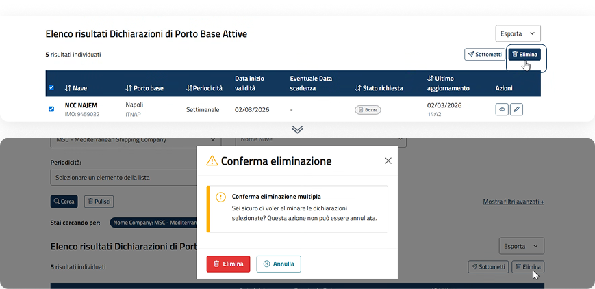
ELIMINAZIONE ALL'INTERNO DEL DETTAGLIO
All'interno del dettaglio di una Dichiarazione in stato "Bozza", dopo il salvataggio in bozza, è possibile eliminarla tramite l'apposito pulsante "Elimina Dichiarazione" presente in fondo alla pagina.
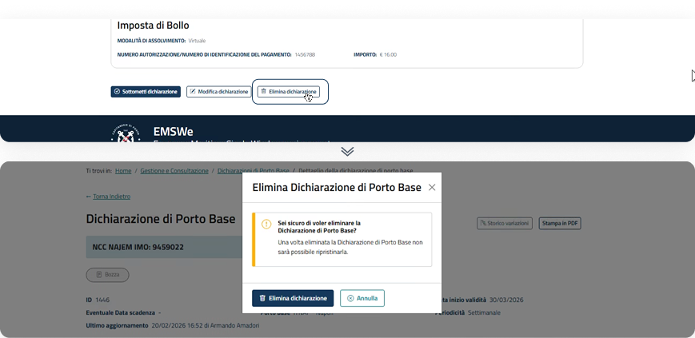
04.
Annullamento
Panoramica sul flusso di annullamento delle Dichiarazioni di Porto Base.
Passaggi per annullare la Dichiarazione
Dopo aver sottomesso una Dichiarazione di Porto Base e fino quando non è stato completato il processo di valutazione, l'utente Armatore potrà annullarla seguendo i seguenti passaggi:
ANNULLA DICHIARAZIONE
All'interno del dettaglio della dichiarazione, dopo la sottomissione, sarà possibile annullarla tramite l'apposito pulsante "Annulla Dichiarazione".
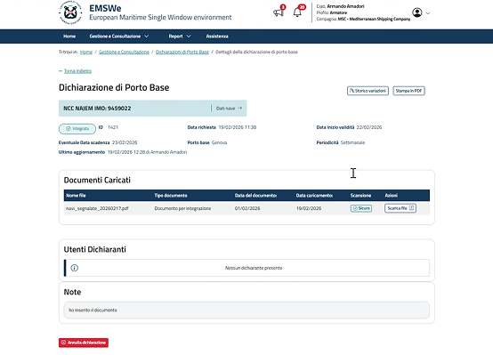
FINESTRA DI CONFERMA E GIUSTIFICAZIONE
Il sistema mostra una finestra in cui l'utente deve obbligatoriamente indicare il motivo e confermare tramite il pulsante "Annulla dichiarazione".
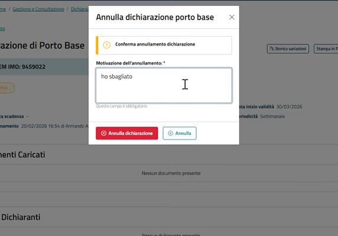
FINESTRA DI CONFERMA DELL'ANNULLAMENTO
Una finestra informa che la Dichiarazione è stata annullata correttamente e non è più valida. Lo stato passerà ad "Annullata".
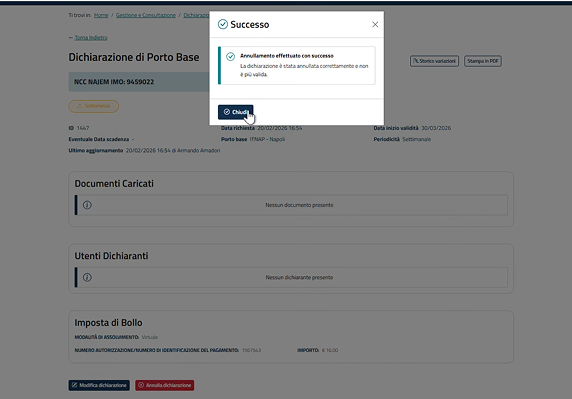
05.
Integrazione Dichiarazione
Panoramica sul flusso di integrazione della Dichiarazione di Porto Base.
Punti di Accesso di una richiesta di integrazione di una Dichiarazione di Porto Base
LISTA ATTIVITÀ DALLA DASHBOARD
È possibile accedere al dettaglio della dichiarazione tramite le azioni disponibili per ciascuna attività presente in dashboard nel tab Porto Base.
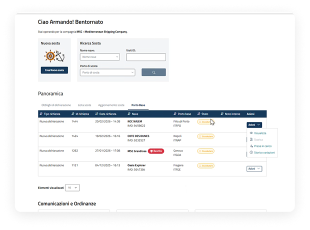
NOTIFICHE
Attraverso la sezione delle notifiche è possibile visualizzare e accedere alla Dichiarazione di Porto Base “Approvata”.
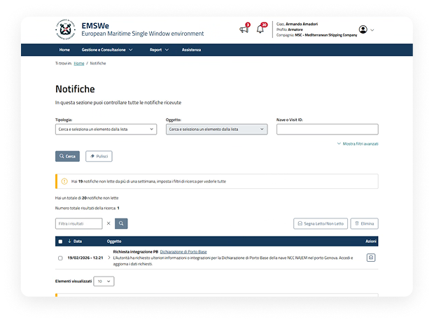
RICERCA DICHIARAZIONE
Nell’elenco dei risultati della Dichiarazione di porto base è possibile accederne al dettaglio e fare una richiesta di invalidazione di una Dichiarazione di Porto Base.
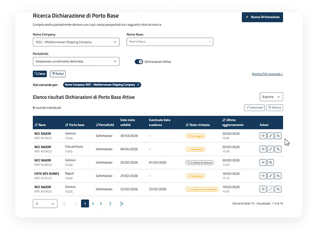
Passaggi per integrare la Dichiarazione
Dopo aver cliccato il pulsante “Richiedi invalidazione”, seguire tutti i passaggi indicati a sistema e inserire la motivazione della richiesta per completare la procedura di richiesta di invalidazione.
DETTAGLIO E MODIFICA DELLA RICHIESTA
All’interno del dettaglio della dichiarazione, per avviare l’integrazione, clicca sul pulsante “Modifica dichiarazione”.
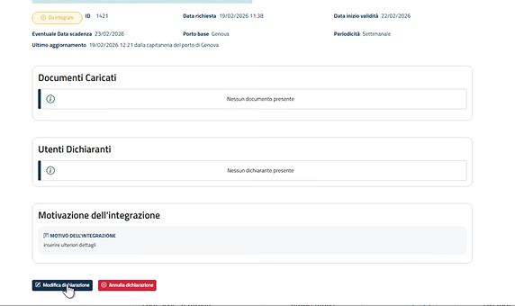
MODIFICA E AGGIUNTA DELLE NOTE DI INTEGRAZIONE
Dopo aver integrato la richiesta con le modifiche, sarà disponibile uno step aggiuntivo in cui inserire eventuali note relative all’integrazione.
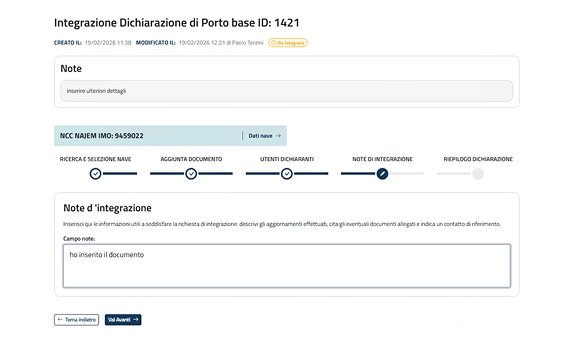
INTEGRA DICHIARAZIONE
Dopo aver modificato la dichiarazione, nello step di riepilogo cliccare su “Integra dichiarazione” e confermare l’operazione tramite la finestra.
06.
Richiesta invalidazione
L'utente Armatore deve poter richiedere l'invalidazione della Dichiarazione di Porto Base quando questa è in stato "Approvata" e non risulti associata ad alcun fascicolo per sosta in abbonamento.
Punti di Accesso per fare una richiesta di invalidazione di una Dichiarazione di Porto Base
Notifiche
Attraverso la sezione delle notifiche è possibile visualizzare e accedere alla Dichiarazione di Porto Base "Approvata".

Ricerca della Dichiarazione
Nell'elenco dei risultati della Dichiarazione di porto base è possibile accederne al dettaglio e fare una richiesta di invalidazione di una Dichiarazione di Porto Base.

Passaggi per richiedere l'invalidazione
Dopo aver cliccato il pulsante "Richiedi invalidazione", seguire tutti i passaggi indicati a sistema e inserire la motivazione della richiesta per completare la procedura di richiesta di invalidazione.
Dettaglio e richiesta di invalidazione
All'interno del dettaglio della Dichiarazione è possibile richiedere l'invalidazione attraverso il pulsante "Richiedi invalidazione".
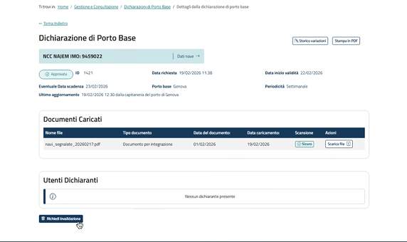
Finestra di inserimento motivazione e conferma
Il sistema mostra una finestra in cui inserire obbligatoriamente la motivazione dell'invalidazione; in seguito si potrà confermare.
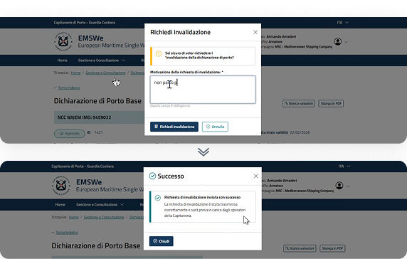
Dettaglio e cambio stato
Dopo aver inviato la richiesta di invalidazione, all'interno del dettaglio della Dichiarazione lo stato passa in "In attesa di invalidazione".
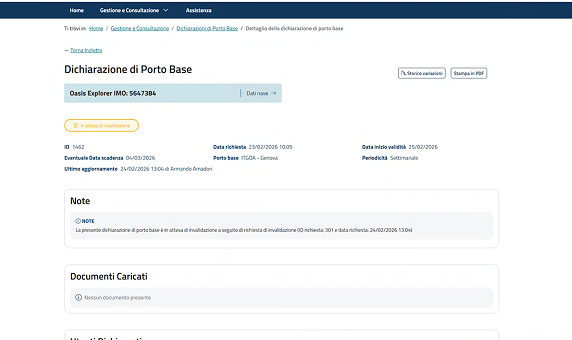
07.
Richiesta di Chiusura
Panoramica sul flusso di richiesta di chiusura della Dichiarazione di Porto Base.
Punti di Accesso per chiudere una Dichiarazione di Porto Base
NOTIFICHE
Attraverso la sezione delle notifiche è possibile visualizzare e accedere alla Dichiarazione di Porto Base "Approvata".
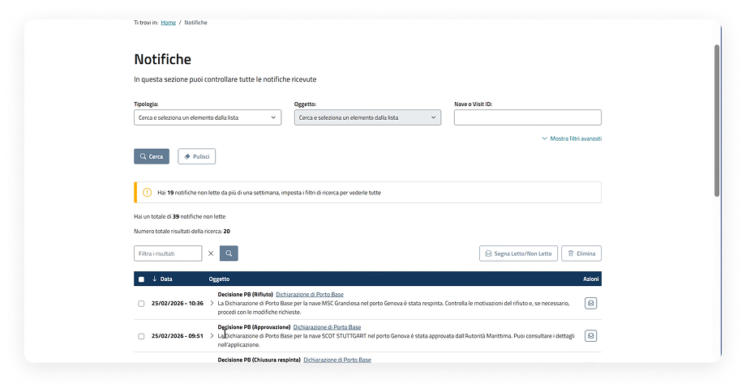
RICERCA DELLA DICHIARAZIONE
Nell'elenco dei risultati della Dichiarazione di porto base è possibile accederne al dettaglio e chiudere la Dichiarazione di Porto Base.
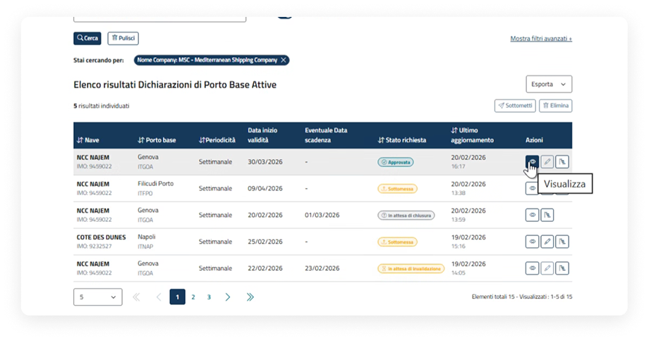
Passaggi per richiedere la chiusura
Dopo essere entrati nella pagina di dettaglio della Dichiarazione di Porto Base seguire i passaggi indicati per procedere con la richiesta di chiusura:
DETTAGLIO E RICHIESTA DI CHIUSURA
Per richiedere la chiusura di una Dichiarazione di Porto Base cliccare "Richiedi chiusura".
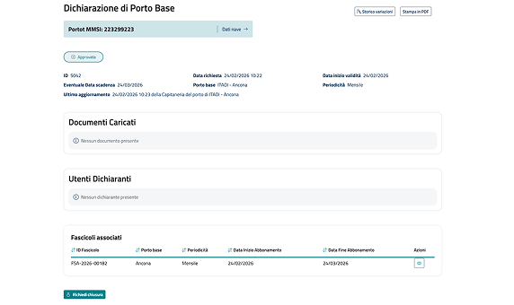
INSERIMENTO DELLA MOTIVAZIONE DELLA CHIUSURA
Il sistema mostra una finestra in cui inserire obbligatoriamente la motivazione della chiusura; cliccare il pulsante "Richiedi chiusura".
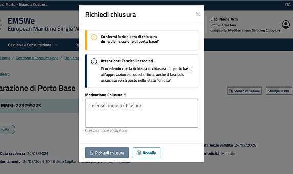
DETTAGLIO E CAMBIO STATO
Dopo aver inviato la richiesta di chiusura, lo stato della Dichiarazione passerà a "In attesa di chiusura".
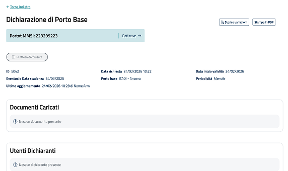
Alert e comunicazione per i fascicoli
associati!
Procedendo con la richiesta di chiusura del porto base,
all'approvazione di quest'ultima, anche il fascicolo
associato verrà posto nello stato
"Chiuso".
DETTAGLIO E RICHIESTA DI CHIUSURA
Per richiedere la chiusura di una Dichiarazione di Porto Base cliccare "Richiedi chiusura".
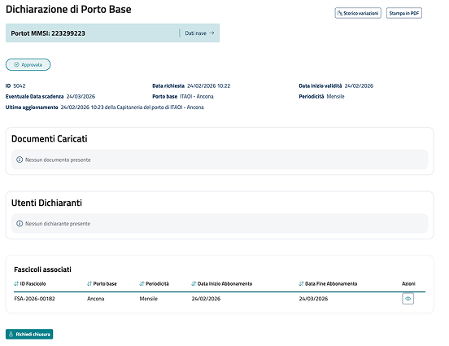
FINESTRA CON MESSAGGIO DI ERRORE
Il sistema presenta una finestra al cui interno viene riportata una nota informativa che comunica all'utente che non è possibile procedere con la chiusura del porto base, in quanto associata ad un fascicolo con traite in corso di svolgimento (boste aperte); per poter procedere con la chiusura della Dichiarazione di Porto Base è necessario chiudere prima il fascicolo ad essa associato. Per accedere alla pagina di dettaglio del fascicolo cliccare il pulsante "Visualizza fascicolo".
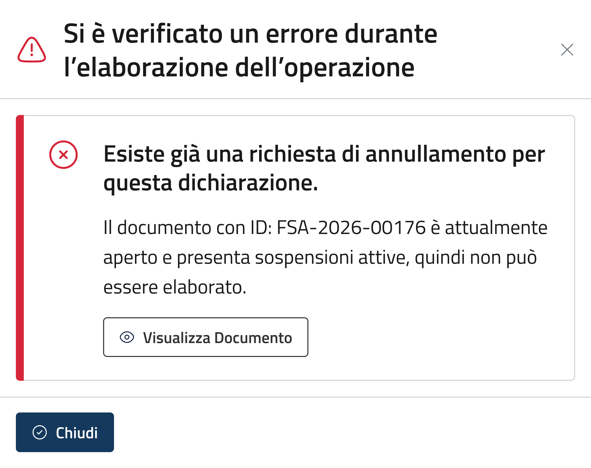
DETTAGLIO FASCICOLO
Dopo aver fatto l'accesso al fascicolo attraverso l'apposito pulsante, viene mostrato il dettaglio del fascicolo stesso.
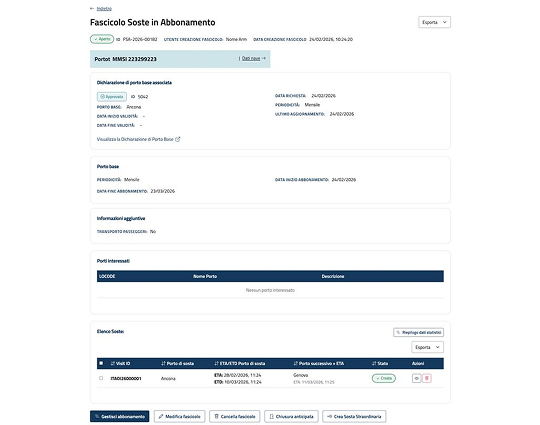
08.
Ricerca e Consultazione
Una panoramica sulla ricerca e consultazione delle Dichiarazioni di Porto Base e delle richieste di invalidazione/chiusura Dichiarazione di Porto Base.
La dashboard
Visualizzazione delle Dichiarazioni di Porto Base
Panoramica delle attività
Dalla dashboard è possibile consultare l'elenco delle Dichiarazioni di Porto Base che richiedono azioni di completamento da parte dell'Armatore.
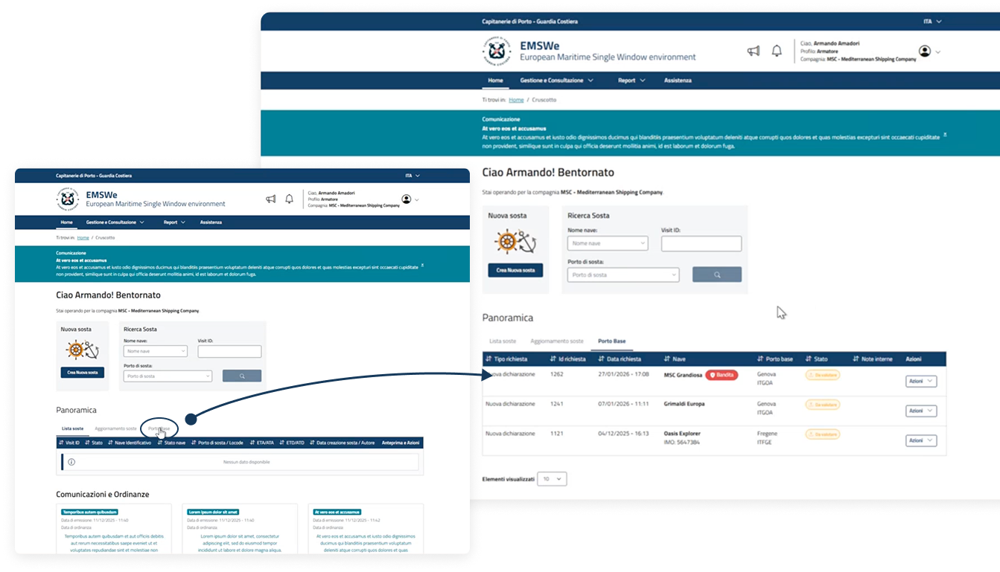
Punto di accesso — La voce di menù
Dalla dashboard, oltre a visualizzare, creare e ricercare le proprie soste, consultare la panoramica delle attività e le comunicazioni e ordinanze, è possibile accedere alle principali sezioni tramite le voci di menu.
Menu a tendina
Cliccando sulla voce "Gestione e Consultazione" viene visualizzato un menu a tendina, da cui è possibile accedere alle "Dichiarazioni di Porto Base".
Ricerca tra Dichiarazione di Porto Base e Richieste di invalidazione
In questa pagina l'utente può visualizzare ed esportare l'elenco delle dichiarazioni di porto base attive, lo storico delle richieste precedenti e le richieste di invalidazione e chiusura.
Dichiarazione di Porto Base
La dichiarazione di porto base è un atto con cui l'armatore indica formalmente il porto in cui una nave è stabilmente basata e la invia a CdP per l'approvazione.
Ricerca Dichiarazione di Porto Base
La pagina consente di ricercare e consultare le Dichiarazioni di Porto Base presenti nel sistema.
La ricerca può essere effettuata utilizzando diversi campi e filtri avanzati, che permettono di individuare rapidamente le Dichiarazioni di interesse, sia attive sia storiche.
Consente di filtrare le Dichiarazioni di Porto Base attive e passate; la ricerca è già impostata per visualizzare solo le dichiarazioni di porto base attive.
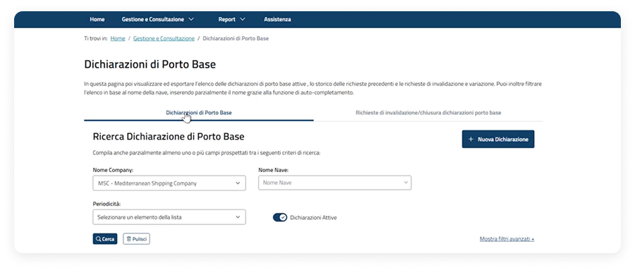
Dichiarazioni attive e disattive
È possibile visualizzare o nascondere lo storico delle Dichiarazioni di Porto Base tramite l'interazione con il pulsante evidenziato.
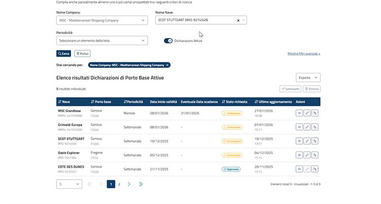
Visualizzazione delle Dichiarazioni di Porto Base attive
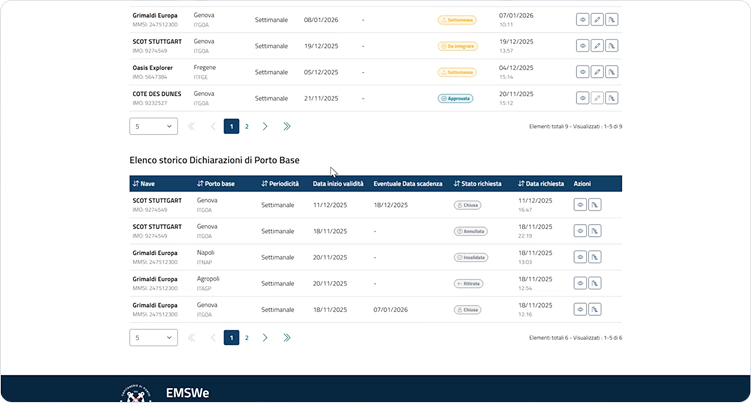
Oltre che le Dichiarazioni attive viene mostrato l'elenco dello storico delle Dichiarazioni di Porto Base
Funzionalità in pagina
Il campo "Nome company" è pre valorizzato in base alla company di appartenenza dell'Armatore. È possibile avviare subito la ricerca oppure aggiungere ulteriori filtri per rendere i risultati più precisi. La schermata è suddivisa nelle seguenti due sezioni:
SEZIONE FILTRI
La sezione Filtri consente di ricercare le Dichiarazioni secondo diversi criteri. Sono disponibili filtri base, come nome della compagnia e della nave, "Dichiarazione Attive", e filtri avanzati per affinare la ricerca per intervallo temporale e stato della richiesta.
VISUALIZZAZIONE RICHIESTA TRAMITE TABELLA
I risultati della ricerca vengono presentati in una tabella, mostrando le informazioni principali e le azioni disponibili.
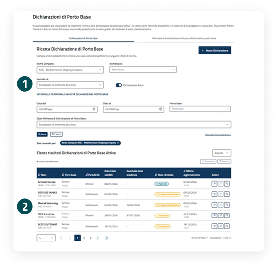
Visualizzazione dettaglio Dichiarazione di Porto Base
All'interno della pagina sono consultabili le seguenti informazioni:
- Dati della Dichiarazione di Porto Base
- Note
- Documenti caricati
- Utenti dichiaranti
Possibili azioni sulla Dichiarazione di Porto Base:
Disponibile per Dichiarazioni in stato "Bozza" e "Invio fallito" non sottomesse all'operatore CdP, "Sottomessa" e che non siano associate a un Fascicolo con Obblighi di Dichiarazione con stato diverso da "Bozza".
Disponibile per Dichiarazioni in stato "Sottomesso" e per le quali non si è concluso l'iter approvativo.
Disponibile per Dichiarazioni in stato "Approvata" e non associata ad alcun fascicolo.
Disponibile per Dichiarazioni in stato "Approvata", associata ad un fascicolo ma con nessuna sosta "Aperta".
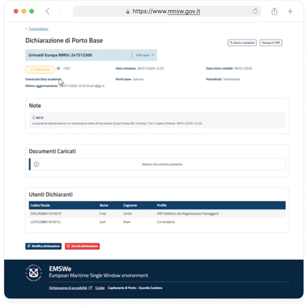
Flussi approvativi Dichiarazione di Porto Base
Di seguito è rappresentato il flusso degli stati che una dichiarazione di porto base può avere, con l'obiettivo di fornire una visione d'insieme del workflow approvativo.
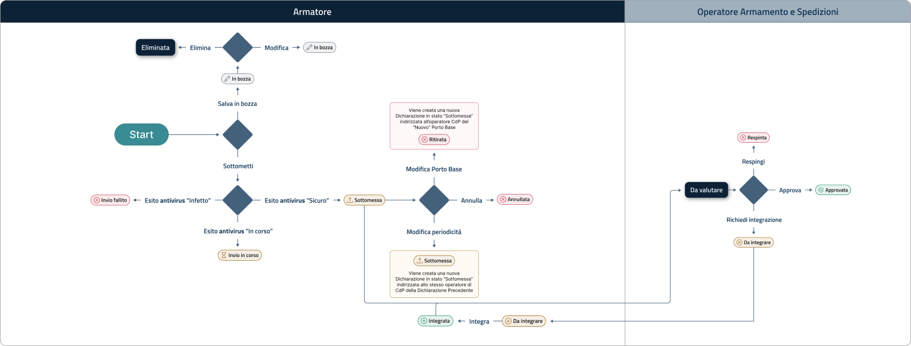
Focus sugli stati della Dichiarazione di Porto Base
Elenco degli stati che la richiesta può assumere e che vengono mostrati all'utente nella tabella.
In bozza
Viene salvata in bozza, ma non inviata per valutazione all'operatore CdP.
Respinta
Viene respinta a seguito di valutazione negativa da parte dell'operatore CdP.
Integrata
L'Armatore ha integrato la Dichiarazione con le informazioni richieste.
Invio in corso
Quando la Dichiarazione è stata sottomessa ma non è ancora terminata la scansione anti-virus del documento allegato.
Annullata
Viene annullata una Dichiarazione già sottomessa e per la quale non sia concluso l'iter approvativo.
Sottomessa
Viene inviata all'operatore CdP per la valutazione.
Da Valutare
Lo stato visualizzato da CdP in seguito a sottomissione.
Revocata
Viene revocata dall'operatore CdP per autotutela dell'Amministrazione.
In attesa di chiusura
L'Armatore ha richiesto la chiusura di una Dichiarazione di porto base "Approvata".
Invio fallito
Quando la Dichiarazione è stata sottomessa ma la scansione anti-virus del documento allegato ha dato esito negativo.
In attesa di invalidazione
L'Armatore ha richiesto l'invalidazione di una Dichiarazione di porto base "Approvata".
Approvata
Viene approvata a seguito di valutazione positiva da parte dell'operatore CdP.
Da integrare
A seguito di valutazione l'operatore Cdp necessita di ulteriori informazioni per poter procedere con l'approvazione.
Chiusa
Viene chiusa a seguito di:
- valutazione positiva della richiesta di chiusura da parte dell'operatore CdP;
- inserimento di una nuova dichiarazione di porto base per stessa nave e stesso porto e data scadenza non valorizzata;
- raggiungimento della data di scadenza.
Ritirata
Viene ritirata a seguito di modifica del porto base da parte dell'Armatore di una Dichiarazione già sottomessa.
Invalidata
Viene invalidata a seguito di valutazione positiva della richiesta di invalidazione da parte dell'operatore CdP.
Richiesta di invalidazione/chiusura Dichiarazione di Porto Base
È la procedura che consente di ricercare le richieste di invalidazione/chiusura di una Dichiarazione di Porto Base "Approvata".
Ricerca della richiesta di invalidazione
La pagina consente di ricercare e consultare le richieste di invalidazione/chiusura di Porto Base presenti nel sistema.
Selezione tipo richiesta
È necessario selezionare il tipo di richiesta, in questo caso "Richiesta di invalidazione", per visualizzare i filtri di ricerca.
Funzionalità in pagina
Una volta selezionato il tipo di richiesta, è possibile avviare subito la ricerca oppure aggiungere ulteriori filtri avanzati per rendere i risultati più precisi. La schermata è suddivisa nelle seguenti due sezioni:
SEZIONE FILTRI
La sezione Filtri consente di ricercare le richieste di invalidazione/chiusura secondo diversi criteri. Sono disponibili filtri base, come nome della nave e periodicità, e filtri avanzati per affinare la ricerca per porto base, stato della richiesta e periodo.
VISUALIZZAZIONE RICHIESTA TRAMITE TABELLA
I risultati della ricerca vengono presentati in una tabella, mostrando le informazioni principali.
Focus Elenco richieste
INFORMAZIONI PRINCIPALI
All'interno della tabella sono visualizzati dati come nome della nave, porto base, periodicità e stato della richiesta.
MOTIVAZIONE E INFORMATIVA
Con l'hover del mouse è possibile consultare la motivazione della richiesta e la normativa di riferimento.
AZIONI SULLA RICHIESTA
Per ogni richiesta sono disponibili le azioni di visualizzazione del dettaglio e consultazione dello storico.
Visualizzazione dettaglio richiesta
All'interno della pagina sono consultabili le seguenti informazioni:
- Dati della richiesta
- Informativa
- Motivazione delle richiesta di invalidazione
Possibili azioni secondarie sulla richiesta:
Visualizzazione dello storico della richiesta.
Possibilità di stampare un PDF del dettaglio.
Flussi approvativi Dichiarazione di Porto Base
Di seguito è rappresentato il flusso degli stati che una richiesta di invalidazione/chiusura può avere, con l'obiettivo di fornire una visione d'insieme del workflow approvativo.
Focus sugli stati della Richiesta di Invalidazione/chiusura
Elenco degli stati che la richiesta può assumere e che vengono mostrati all'utente nella tabella.
Sottomessa
Viene inviata all'operatore CdP per la valutazione.
Respinta
Viene respinta a seguito di valutazione negativa da parte dell'operatore CdP.
Approvata
Viene approvata a seguito di valutazione positiva da parte dell'operatore CdP.